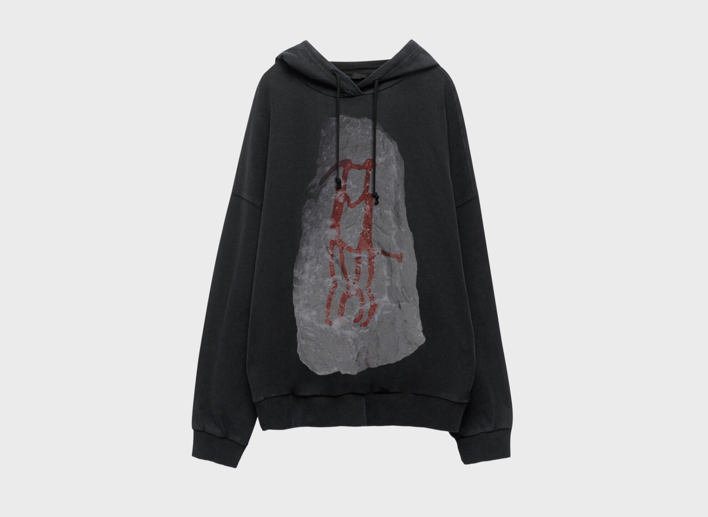
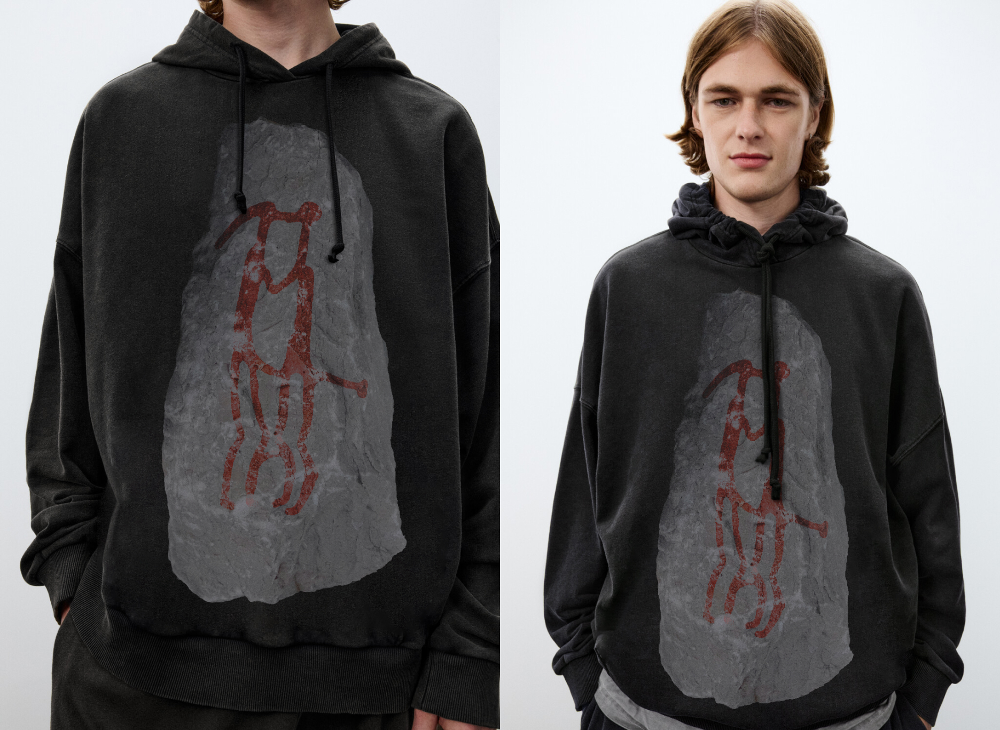
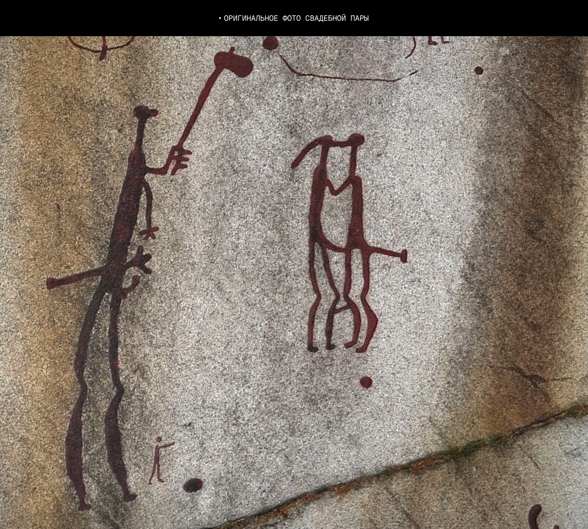

Худи для Befree на День всех влюблённых
Befree проводил конкурс принтов ко Дню всех влюблённых. Решил оцифровать и реконструировать «Свадебную пару» — это один из тысяч петроглифов в Тануме, Швеции, которые были сделаны 1700 — 500 лет до нашей эры и входят в список Всемирного наследия ЮНЕСКО
Сама пара выступает символом. Любовь как древнее и базовое фундаментальное человеческое чувство, которое родилось задолго до появления цивилизаций и уже тогда было настолько важным элементом, что его документировали люди бронзового века
Befree held a print design contest for Valentine's Day. I decided to digitize and reconstruct the "Wedding Couple"—one of thousands of petroglyphs in Tanum, Sweden, created between 1700 and 500 BC, which are listed as a UNESCO World Heritage Site.
The couple itself serves as a symbol. Love is an ancient and fundamental human emotion—one that emerged long before the rise of civilizations and was already such a vital element that Bronze Age people documented it.


